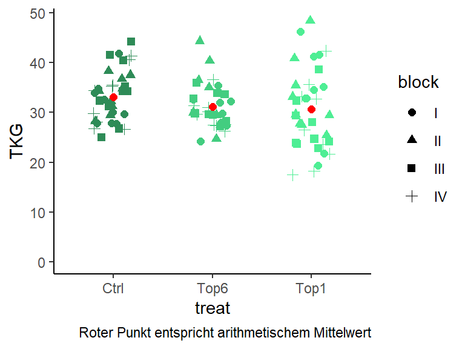

Sub-Sampling
Dieses Beispiel entspricht Example 9 aus dem Skript zur Vorlesung “Mixed models for metric data” von Prof. Dr. Piepho. In dem Skript finden sich weitere Erläuterungen, sowie SAS Codes.
Datensatz
In einem Gewächshausversuch mit Sorghum wurde untersucht wie sich das Entfernen von Blättern auf das Tausendkorngewicht (TKG) auswirkt. Dazu wurden den Pflanzen entweder (i) alle bis auf das oberste Blatt (“Top1”), (ii) alle bis auf die obersten 6 Blätter (“Top6”) oder (iii) keine Blätter (“Ctrl”) entfernt. Diese drei Behandlungsstufen wurden jeweils auf einem Tisch in 4 vollständigen Wiederholungen (I-IV) als randomisierte vollständige Blockanlage angelegt:
## Please use desplot(data,form) instead of desplot(form,data)Das ist aber noch nicht alles. Bis hierhin könnten wir die Daten auswerten wie bei einer einfaktoriellen randomisierten, vollständigen Blockanlage wie in diesem Beispiel, mit dem Unterschied, dass es nicht um Parzellen, sondern Tische ginge.
Die Besonderheit dieses Versuchs besteht allerdings darin, dass auf den Tischen jeweils 10 Töpfe mit jeweils 1 Pflanze standen. Tatsächlich haben wir also 10 Messwerte von 10 verschiedenen Pflanzen auf demselben Tisch mit derselben Behandlungsstufe:
## Please use desplot(data,form) instead of desplot(form,data)Es muss an diesem Punkt klar sein was hier anders ist als sonst: Nur weil wir doch nicht 4 Beobachtungen pro Behandlungsstufe haben, sondern 40, bedeutet das nicht, dass wir eine randomisierte, vollständige Blockanlage mit 40 Wiederholungen angelegt haben. Fakt ist, dass wir in diesem Versuch weiterhin nur von 4 vollständigen Blöcken/Wiederholungen sprechen können. Hätten wir wirklich einen Versuch mit den 40 Töpfen pro Behandlungsstufe als 40 Wiederholungen anlegen wollen, hätten wir sie auch dementsprechend im Versuchsdesign randomisieren müssen. Stattdessen wurden nur die Behandlungsstufen auf die Tische randomisiert und dann mehrfach pro Tisch gemessen. Das ist vergleichbar mit einem Szenario in dem man in einem Feldversuch dieselbe Parzelle mehrmals beprobt (z.B. Halmhöhe misst) - auch hier führen zusätzliche Datenpunkte nicht dazu, dass man zusätzlich Parzellen hat.
Stattdessen spricht man in Fällen wie diesem entweder von Pseudo-Wiederholungen, weil man eben keine echten Wiederholungen aber auch keine Messwiederholungen (am selben Objekt über längere Zeit) hat, oder man spricht von Sub-Sampling, weil man quasi noch innerhalb seiner samples mehrere Beobachtungen vornimmt.
Deskriptive Statistik
Wie immer schauen wir uns ein paar deskriptive Statistiken an um ein Gefühl für die Daten zu bekommen.
print(psr, nrows=10)## treat block plant TKG
## 1: Ctrl I 1 41.89
## 2: Ctrl I 2 29.97
## 3: Ctrl I 3 27.82
## 4: Ctrl I 4 29.68
## 5: Ctrl I 5 27.84
## ---
## 116: Top6 IV 6 31.00
## 117: Top6 IV 7 31.36
## 118: Top6 IV 8 29.67
## 119: Top6 IV 9 30.12
## 120: Top6 IV 10 27.33plot(y=psr$TKG, x=psr$treat)str(psr)## Classes 'data.table' and 'data.frame': 120 obs. of 4 variables:
## $ treat: Factor w/ 3 levels "Ctrl",""..
## $ block: Factor w/ 4 levels "I","II""..
## $ plant: Factor w/ 10 levels "1","2""..
## $ TKG : num 41.9 30 27.8 29.7 27.8 ..
## - attr(*, ".internal.selfref")=<exter..ggplot(data=psr,
aes(y=TKG, x=treat, color=treat)) +
geom_jitter(aes(shape=block),
width=0.2, height=0, size=2) +
scale_color_manual(values=Farben) +
ylim(c(0, max(psr$TKG))) +
stat_summary(fun.y="mean", colour="red",
size=2, geom="point") +
guides(color=FALSE) + theme_classic() +
labs(caption="Roter Punkt entspricht arithmetischem Mittelwert")
Schließende Statistik
Einfache Lösung
Um das Problem der Pseudowiederholungen zu umgehen, kann einfach der Mittelwert eines jeden Tischs - also das arithmetische Mittel über die jeweils 10 Pflanzen - gebildet werden und die Daten wie eine einfache randomisierte, vollständige Blockanlage ausgewertet werden. Das ist möglich, da man so wieder nur einen Wert pro Tisch hat und somit der Tisch, also die Kombination aus Behandlung und Wiederholung, die Versuchseinheit ist. Man verliert dabei aber die Informationen darüber wie sehr die Werte zwischen den 10 Pflanzen geschwankt haben. Anders ausgedrückt geht ein großer Teil des Mehraufwands durch das häufigere Messen wieder verloren noch bevor man zur schließenden Statistik kommt.
Bessere Lösung
Um die Daten so zu modellieren wie man sie erfasst hat, gilt es also die Mehrfachmessungen am gleichen Tisch zu berücksichtigen. Anders ausgedrückt, sollte das Modell sowohl Noise zwischen den verschiedenen Tischen, als auch zwischen den verschiedenen Pflanzen auf demselben Tisch berücksichtigen. Die Versuchseinheit, also in diesem Versuch die Einzelpflanze, wird dabei ja sowieso durch den Versuchsfehler aufgefangen. Es gilt also lediglich sich um den zusätzlichen Störfaktor Tisch zu kümmern. Das ist möglich, indem die Tische als zufällige Effekte ins Modell aufgenommen werden.
Wir haben aktuell noch keine Spalte im Datensatz, die einzelne Tische identifiziert. Wir wissen aber, dass es 12 Tische gibt, nämlich einer pro Block-Behandlung-Kombination. Wir können also einfach den Effekt also block:treat ins Modell schreiben und so einen Effekt pro Tisch schätzen. Da dies aber oft zu Verwirrungen führt, weil der Bezug zu Interaktionseffekte zwischen Behandlungen hergestellt wird, zeige ich hier auch noch die intuitivere Lösung bei der vorerst eine Spalte “Tisch” erzeugt wird. Wir passen letztendlich aber zwei Mal das gleiche Modell an:
#
#
#
library(lme4)
m1<-lmer(TKG ~ treat + block + (1|block:treat),
data=psr)
print(VarCorr(m1), comp="Variance")## Groups Name Variance
## block:treat (Intercept) 1.2815
## Residual 34.3446psr$Tisch <- paste0(psr$block, psr$treat) %>%
as.factor
library(lme4)
m2<-lmer(TKG ~ treat + block + (1|Tisch),
data=psr)
print(VarCorr(m2), comp="Variance")## Groups Name Variance
## Tisch (Intercept) 1.2815
## Residual 34.3446ANOVA
library(car)
Anova(m1, type="III", test.statistic="F")## Analysis of Deviance Table (Type III Wald F tests with Kenward-Roger df)
##
## Response: TKG
## F Df Df.res Pr(>F)
## (Intercept) 453.4624 1 5.6147 1.383e-06 ***
## treat 1.4265 2 5.9920 0.3114
## block 1.1123 3 5.9689 0.4153
## ---
## Signif. codes: 0 '***' 0.001 '**' 0.01 '*' 0.05 '.' 0.1 ' ' 1Laut ANOVA unterscheiden sich die Behandlung nicht signifikant voneinander. Dennoch schauen wir uns zum Schluss auch noch die Mittelwertvergleiche an.
library(emmeans)
emmeans(m1, pairwise ~ "treat")## $emmeans
## treat emmean SE df lower.CL upper.CL
## Ctrl 33.13925 1.096617 5.39 30.37989 35.89861
## Top6 31.16909 1.154736 6.61 28.40525 33.93293
## Top1 30.61694 1.128888 6.06 27.86164 33.37224
##
## Results are averaged over the levels of: block
## Degrees-of-freedom method: kenward-roger
## Confidence level used: 0.95
##
## $contrasts
## contrast estimate SE df t.ratio p.value
## Ctrl - Top6 1.9701656 1.592404 5.97 1.237 0.4766
## Ctrl - Top1 2.5223069 1.573835 5.72 1.603 0.3180
## Top6 - Top1 0.5521413 1.614869 6.33 0.342 0.9382
##
## Results are averaged over the levels of: block
## Degrees-of-freedom method: kenward-roger
## P value adjustment: tukey method for comparing a family of 3 estimatesAuch hier ist wie erwartet kein signifikanter Unterschied gefunden worden. Das bestätigt den Eindruck aus der deskriptiven Statistik.
Bei Fragen kannst du mir gerne schreiben!
schmidtpaul@hotmail.de